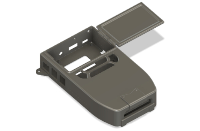
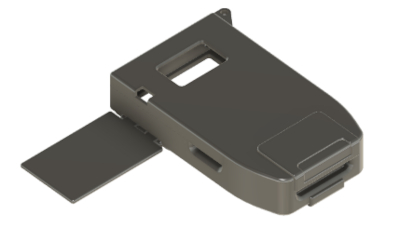
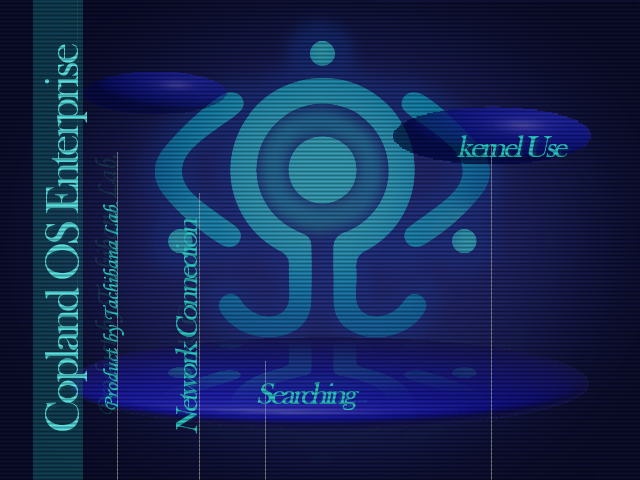
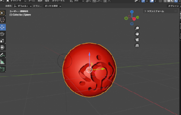
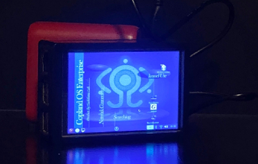
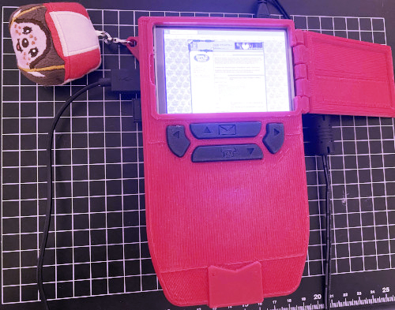
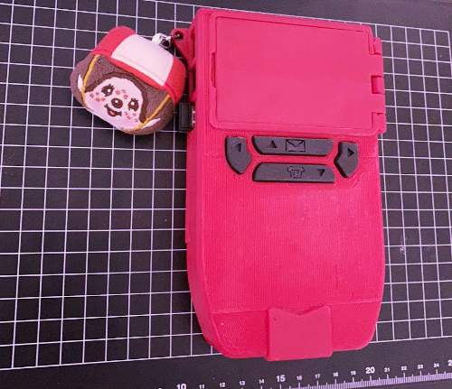

Equipment
- Prusa MK4 Printer
- 128 GB microSD card
- Raspberry Pi SBC
- Hosyond 3.5" GPIO LCD touchscreen
- Anker battery pack
- Any offbrand micro USB cable
- PuTTY terminal
- Raspberry Pi imager
- Autodesk Fusion 360
- RPi substitute model
- Gimp
- Blender
inspired by r/unixporn and other people's cyberdeck builds, i had made my own handinavi from serial experiments lain.
the lone size of the raspberry pi board + GPIO screen fully assembled made it a whopping 3cm horizontally, which isn't ideal. i'm essentially modeling a damn brick. despite that, i managed to keep it as compact as possible just to house the Pi, display, and battery.
the outside shell went through so many alterations in Blender until I decided to just learn how to use Fusion 360. Can't say this aspect of making the handinavi is exciting to explain. There were plenty 3d reference models of the RPi model SBC (in this case, the RPi 3b+) I'm using to capture correct port measurements.


the case comes with a hinged faux trackpad, snapguides, and inserts for the accessories. the back is carved out for an adhesed pseudo-vent and a hole for the sd card to rest on. i opted out of adding snapjoints as the guides were compact enough to hold the case together.
before touching anything the LCD screen and touch matrix had to be inverted and lie display resoluton changed to 800 x 600 4:3.
we get to see a lot of footage of what lain's handinavi looks like in lie show. as far as i could tell... it'd be impossible to recreate it to the letter. the canonical handinavi's applications are displayed as spherical windows that bounce around lie screen, and i don't have the technical nerve to try and program that. instead, i customized it after lain's desktop environment as seen in layer02 and ahead.
several artistic liberties were taken when it came to making the wallpaper because i didn't have the privilege of creating interactive tooltips or buttons. the next best thing was just to make my own theme using gimp and blender.

i've pretty much made everything in the wallpaper except for the fontfaces,
the orb graphics are just mesh presets rendered in blender. if i scale it around, i stretch it in gimp with interpolation set to none. i made 2 versions; one for tooltip flavor and a flat platform as seen when lain checks her e-mail or opens applications. these assets were recycled later for the custom icon packs.
the navi logo in lie back got airbrushed a bit to emulate a sort of glowing effect, as I felt it was missing the eerie capabilities and presence of the actual lain computer without it. gradients are your friend.
i'm happy with what i ended up with. feel free to save the wallpaper for your own 640 by 480 display.



